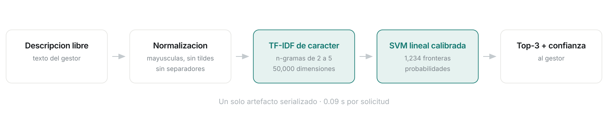
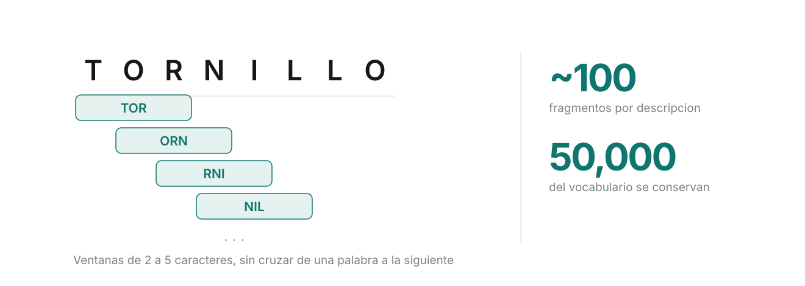
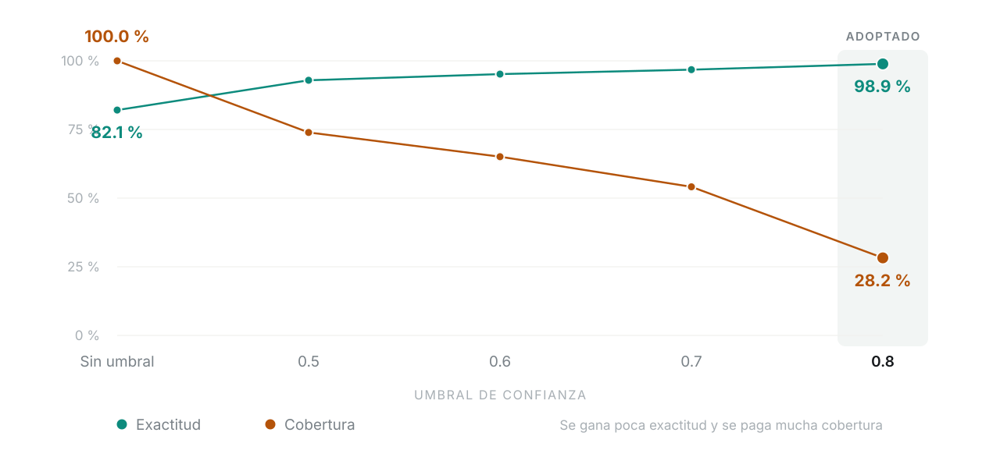

El modelo ganador
SVM lineal sobre
n‑gramas de carácter
Calibrada con validación cruzada · 1,234 clases · 54 segundos en procesador convencional
Las métricas
El costo
54 s
entrenar, en CPU
31,656 ejemplos
0.09 s
predecir
1.5 % del tiempo de máquina
Qué hace
Texto libre →
una de 1,234 clases
No entiende el material. Aprendió qué patrones de caracteres aparecen en las descripciones de cada clase.
El pipeline

Etapa 1 · Vectorización
Caracteres,
no palabras
El texto se parte en secuencias de caracteres consecutivos, no en palabras completas.
Cómo se parte el texto

Por qué caracteres
TORNILLOTORNILOTORN
Para un vectorizador de palabras son tres tokens sin relación. Para uno de caracteres son tres textos casi idénticos.
El peso de cada fragmento
Lo raro
pesa más
Un fragmento que aparece en casi todas las descripciones no distingue nada. Uno que aparece en pocas clases es el que discrimina.
Etapa 2 · El clasificador
1,234
fronteras, una por clase
Por qué lineal basta
Etapa 3 · Calibración
Distancia → probabilidad
Sin esta etapa no existiría el umbral. Es lo que convierte un clasificador en un sistema capaz de abstenerse.
Punto de operación
Cada sugerencia llega
con una confianza
La probabilidad calibrada de la clase más votada. Es lo que permite tratar distinto lo seguro de lo dudoso.
Dos regímenes
Supera el umbral
El sistema resuelve solo
No lo supera
Se deriva al gestor con las tres candidatas
El compromiso
Subir el umbral
no mejora el modelo
Lo hace más selectivo. Menos casos pasan, pero los que pasan son más confiables.
Exactitud contra cobertura

Punto de operación
| Umbral | Exactitud | Cobertura | Resueltos |
|---|
| Sin umbral | 0.8208 | 100 % | 7,915 |
| 0.5 | 0.9294 | 73.9 % | 5,851 |
| 0.6 | 0.9517 | 65.1 % | 5,151 |
| 0.7 | 0.9678 | 54.1 % | 4,284 |
| 0.8 | 0.9888 | 28.2 % | 2,235 |
Los dos errores
no cuestan lo mismo
El 72 % restante no queda solo
3
candidatos ordenados
por probabilidad
91.8 %
exactitud sobre esos tres
Por qué el umbral es legítimo
Los aciertos se agrupan
en confianza alta
Los errores se dispersan hacia valores bajos. Sin esa separación, cualquier umbral seleccionaría al azar.
No es una constante
El umbral se recalibra
Cada corrección del gestor sobre una solicitud que el sistema resolvió solo queda registrada.